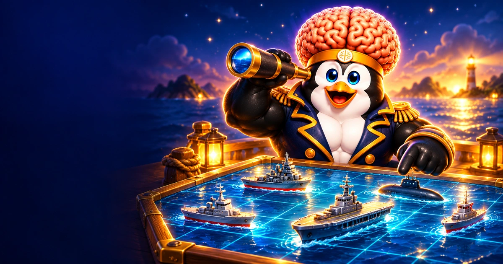

TU PRÓXIMA GRAN ESTRATEGIAUn océano.
Un océano.
Tu jugada.
Oculta tu flota. Sigue las pistas.
Encuentra los cinco barcos rivales.
No puntúa para la clasificación general
¿Cómo te enfrentas a Coco?
Coco solo conoce el resultado de sus disparos. Tu flota permanece oculta.
1 · PREPARA TU FLOTA
0 / 5 barcosCada barco, a su lugar.
Elige un barco y toca dónde empieza.
2 · ENCUENTRA SU FLOTA
Tu turno, capitán.
5 barcos en tu flota5 barcos rivales0 disparos
Océano rival
Su flota está oculta• Agua✦ Tocado× Hundido
No puntúa para la clasificación general
Cinco barcos. Una estrategia.
- Coloca tu flota. Cinco barcos de 5, 4, 3, 3 y 2 casillas. Toca su inicio y gíralos cuando lo necesites. También puedes colocarlos al azar.
- Busca la flota rival. En tu turno, elige una casilla del océano contrario y confirma el disparo.
- Lee el resultado. Agua significa que no hay barco. Tocado indica un acierto. Hundido significa que encontraste todas las casillas de ese barco.
- Cambia de turno. Se hace un disparo por turno, incluso al acertar. El primer capitán se elige al azar.
- Encuentra los cinco barcos. Gana quien hunde toda la flota rival. No hay premios de dinero ni puntos para la clasificación general.
Consejo: después de un «Tocado», prueba las casillas vecinas. Las coordenadas combinan una letra de fila y un número de columna, como C4.
Online: cada capitán tiene hasta 5 minutos para disparar. Después, el rival puede cerrar la partida por inactividad. Las salas se pueden retomar con la misma cuenta durante 7 días.
Invita a tu rival.
Comprobando tu cuenta…
O ÚNETE A UNA INVITACIÓN
Mis partidas
Falta el otro capitán.
Comparte esta invitación. Tu amigo necesita su propia cuenta de Coco.